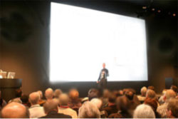
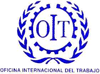
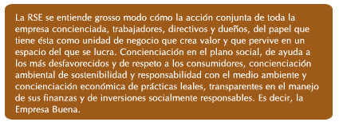

2.- concepto de responsabilidad social corporativa
En la actualidad y de una manera más intensa en el futuro, el éxito financiero ya no es la única medida por la que las partes interesadas emiten un juicio sobre las empresas. Ahora se espera de las compañías que tengan un buen desempeño en ámbitos no financieros tales como los derechos humanos, la ética de la empresa, políticas ambientales, desarrollo de la comunidad, gobierno corporativo o prácticas laborales.
Tal es la importancia de estas cuestiones que el desempeño social y ambiental se ha puesto a la misma altura que el financiero. Este nuevo escenario plantea a las empresas el desafío de presentar una triple cuenta de resultados: económica, social y ambiental, y atender a las demandas y expectativas de las partes interesadas. En la nueva economía global, las empresas que lo consigan estarán mejor posicionadas para conseguir el éxito financiero a largo plazo y sobrevivir en un entorno cada vez más competitivo.
Conceptualmente es verdad que la responsabilidad social corporativa (RSC) ha sido definida desde diversos ámbitos de modos muy distintos. A pesar de esta diversidad conceptual, en casi todos los enfoques es posible encontrar un fondo común que ha permitido llegar a un cierto consenso sobre el concepto de RSC.
Una de las definiciones más conocidas es la de la Comisión Europea: "La RSC es la integración voluntaria, por parte de las empresas, de las preocupaciones sociales y ambientales en sus operaciones comerciales y en sus relaciones con sus interlocutores".
Pero no existe una única acepción del concepto de RSC , sino que este concepto se emplea para describir una amplia variedad de iniciativas de orden económico, social y medioambiental que tomadas por las empresas no se basan exclusivamente en requisitos legalmente obligatorios, y que por tanto, en su mayoría, son de naturaleza voluntaria.
La RSC es una iniciativa liderada fundamentalmente por las instituciones políticas. En Europa por la Comisión de las Comunidades Europeas que desarrolla el papel de promotor de la reflexión de entender el desarrollo social y muy especialmente de la empresa privada, una forma de establecer puentes entre las racionalizaciones económicas y sociales, una tarea que hasta ahora ha estado gestionada en el ámbito de Europa por el Estado de Bienestar.
En nuestro nivel institucional, el Foro de Expertos compuesto por 34 expertos en la materia, junto a 11 representantes de los Mº de Trabajo y Asuntos Sociales, Economía, Industria, Sanidad, Medioambiente y Asuntos Exteriores, han consensuado el concepto de Responsabilidad Social de las Empresas de la forma en la que se comenta a continuación.
Así nos podemos encontrar varios puntos de vista sobre el significado de RSC según el criterio de diferentes organizaciones:
|
Unión Europea OIT ISO Foro de Expertos WBCSD[1] |
|
De cualquier forma la palabra empresa pertenece más a la cultura latina y la palabra corporación a la tradición anglosajona. En resumen, no existe en la actualidad consenso sobre el término a utilizar para designar una manera de hacer negocios y entender la empresa del siglo XXI, pero ya que le debate se inicio en la cultura sajona, en la UE se a adoptado la RSC para definirla.
Mientras que el concepto de Responsabilidad Social de la Empresa, se ajusta sobretodo a lo que en términos anglosajones se entiende como Corporate Governance.
La RSC, como se observa, se trata de un concepto dinámico y en desarrollo, no cristalizado. La mayoría de las instituciones internacionales esquivan elaborar una definición del mismo, o cuando lo hacen, le brindan una dimensión puramente operativa. Además, muchas organizaciones adoptan un enfoque pragmático, equiparando el término RSC a otros conceptos relacionados, como sostenibilidad o ciudadanía corporativa.
Pero, ¿Qué se entiende por RSE? ...

El concepto de Responsabilidad Social Corporativa supone la integración voluntaria de las preocupaciones sociales y medioambientales en las operaciones de negocio de una empresa y en la relación con sus interlocutores o grupos de interés. Esta responsabilidad social de las empresas se vértebra en las siguientes conductas clave:
- Elevar el cumplimiento de las normas por encima del marco regulatorio establecido por las diferentes Administraciones, representando, por tanto, esta conducta una decisión voluntaria de cada empresa.
- Adaptar el modo de relación de la organización con sus grupos de interés, coordinando esta preocupación social tanto con la estrategia del negocio como con la forma en que la empresa opera en el mercado.
- Ampliar el objetivo de creación de valor de la organización desde una perspectiva financiera de rentabilidad para el accionista, hacia la perspectiva de creación de valor asociada a cada uno de sus grupos de interés.
- Alinear todo lo anterior con los valores de la empresa, la ética, el buen gobierno y la transparencia empresarial.
La integración de la RSC en una organización supone identificar cuáles son los principales grupos de interés para el negocio, los stakeholders (empleados, administración, consumidores, accionistas, inversores, opinión pública, proveedores, entorno local...,) y cuáles son sus necesidades, motivaciones y expectativas. Esta identificación evidenciará los riesgos potenciales que pueden impactar en el negocio y las claves de su éxito en el mercado.
Los beneficios de configurar un Plan de RSC son los siguientes :
- Mejora la imagen externa e interna de la empresa.
- Aumento de la Reputación Corporativa.
- Optimización de la inversión socialmente responsable.
- Comunicación más fluida con los stakeholders.
- Potenciación de la cultura y valores corporativos de la entidad.
- Alineación e identificación del capital humano con la estrategia de la empresa.
- Mejora del clima laboral interno, aumentando el sentimiento de orgullo y pertenencia.
- Incremento de las ventas, ayudándose para ello de campañas de marketing social.
- Crecimiento del nivel de competitividad de la empresa.
- Actúa como método de ayuda para corregir, proporcionalmente, desigualdades sociales.
Por todo ello la RSC se puede afirmar que es:
- Integral, es decir, abarca a un conjunto complejo de dimensiones de la empresa.
- Gradual, puesto que se presenta como un camino de excelencia a seguir.
- Proporcional, ya que la expectativa de su ejercicio y aplicación tiene una relación directa con el tamaño de la empresa y su correspondiente poder o capacidad de influencia en el mercado.
Este concepto de RSC es fundamental en el mercado empresarial actual, en el que grupos de interés constituidos por los Consumidores y la Administración adquieren un papel protagonista debido a su sensibilización y la percepción de la ciudadanía en general en la responsabilidad empresarial.

¡Enhorabuena! has llegado al final del Tema 2, para poder realizar la autoevaluación asegúrate de haber
revisado bien la teoría
y pulsa el botón de Marcar Tema Completado.

{kind=link}
{kind=link}
{kind=link}